We commissioned 491 by holding a wetdown and celebrated with neighboring departments.
Attendees from Nearby Departments
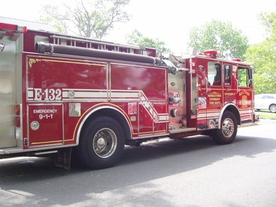
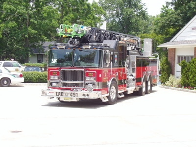
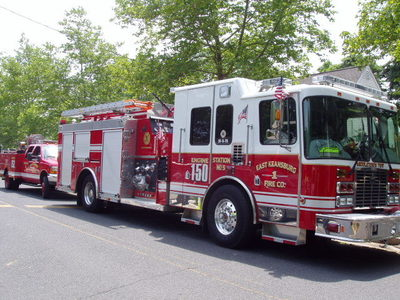
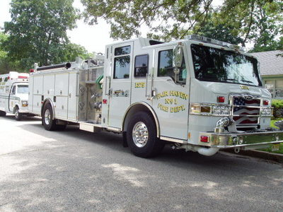
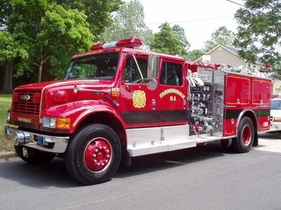
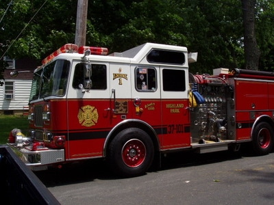
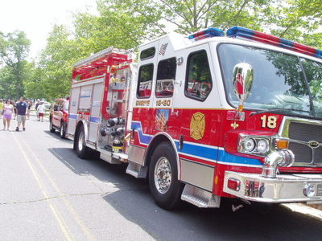
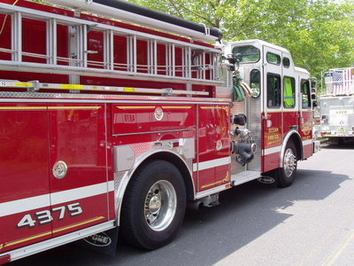
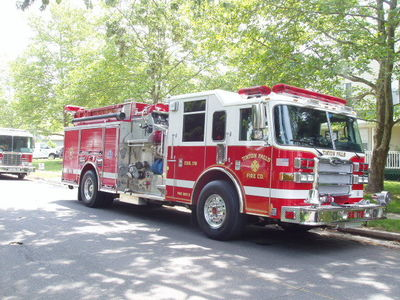
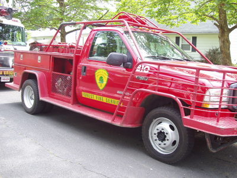
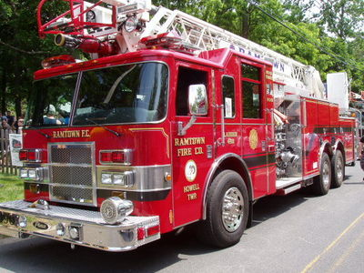
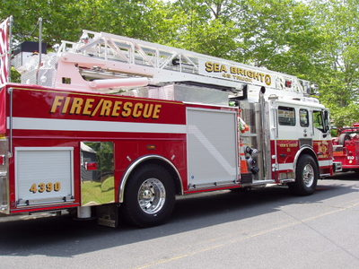
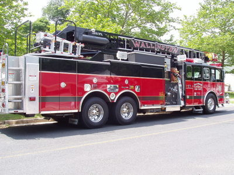
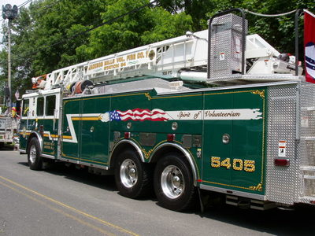
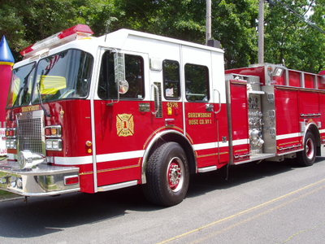
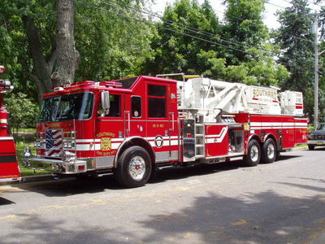
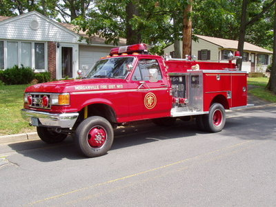
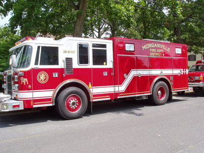
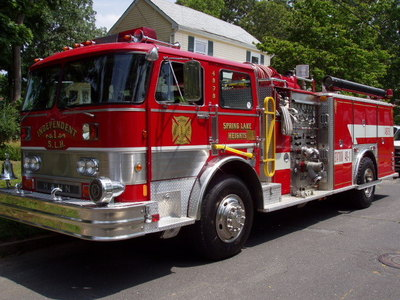
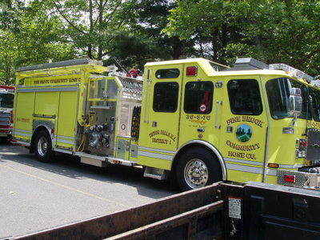
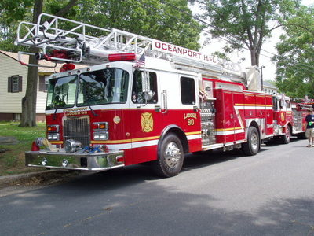
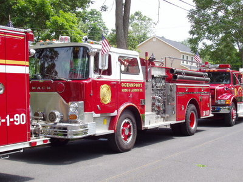
Photos from Throughout the Day
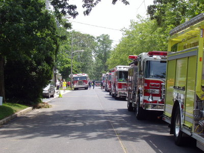
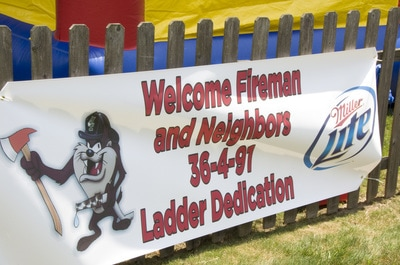
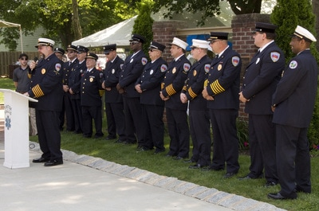
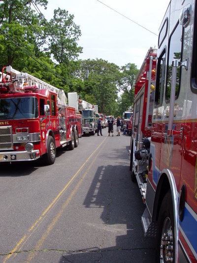
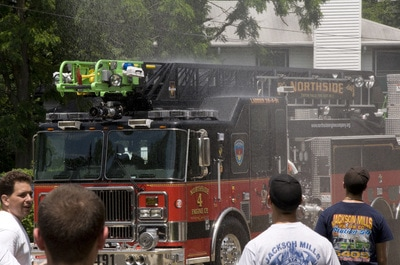
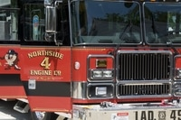
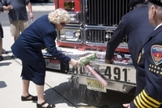
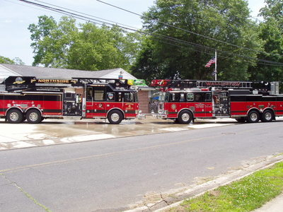
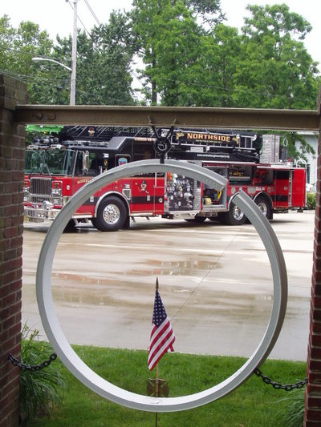
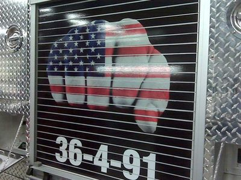
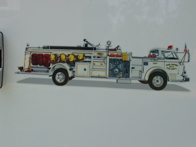
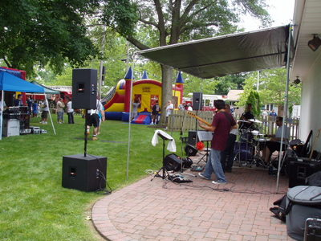
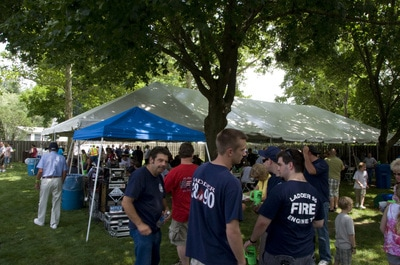
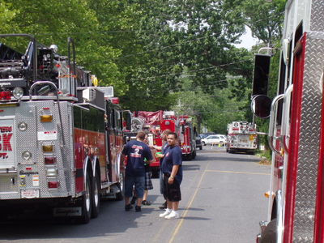
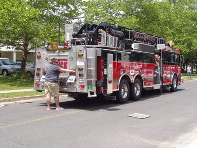
Thanks for contributions to Jason Schramm — Jason Schramm Photography.